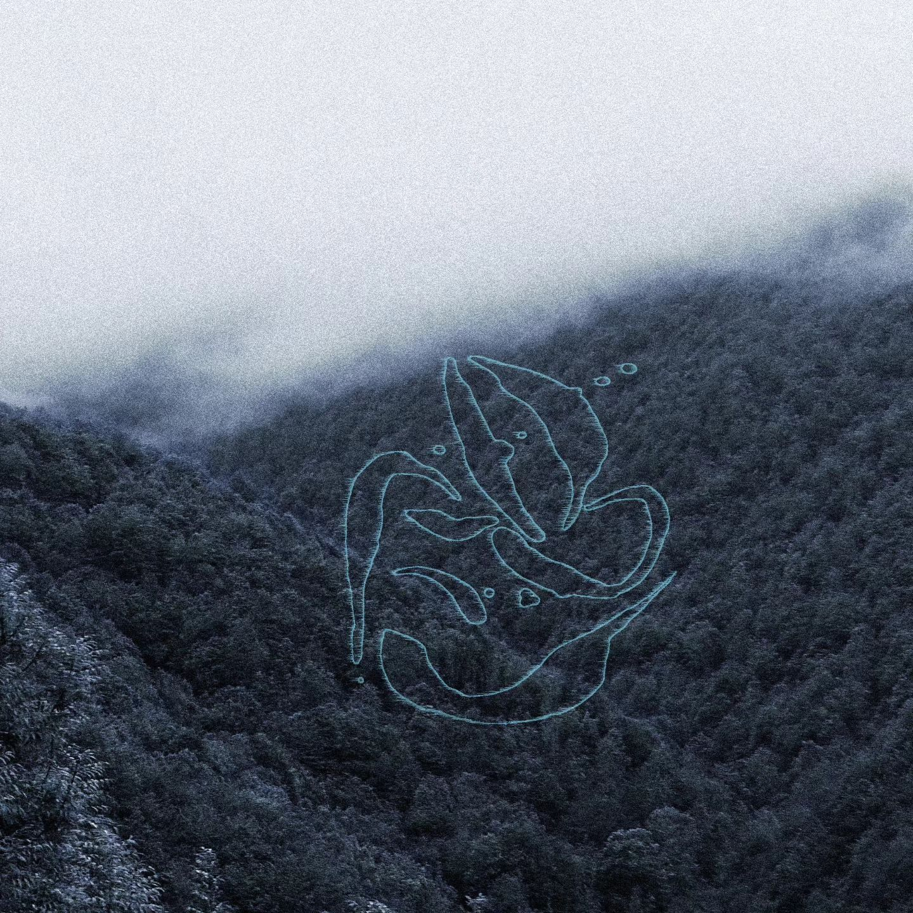
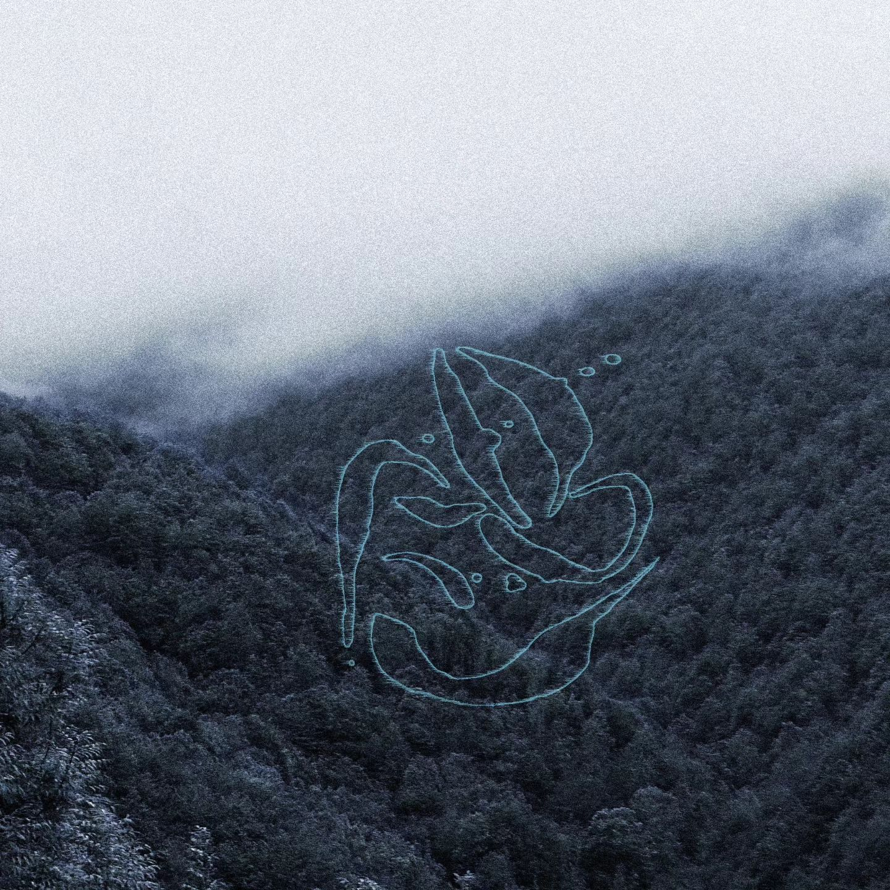

à propos
La composition de musique personnelle et originale, une quête entamée en 2012, dont la réponse reste encore floue.
J’y travaille avec détermination, intensément...
Vous pourrez découvrir ici mes différents projets musicaux, enrichis de visuels auxquels j’accorde le plus grand soin.
Graphiste et programmeur autodidacte, je cherche sans cesse à me perfectionner... Promis, juré !
Composition Électroacoustique
Vous pouvez trouver dans cette section un aperçu exhaustif de mon catalogue électroacoustique.
Du paysage sonore, sauce Lucien, à la musique pour le spectacle vivant, je m'attache à illustrerles moments de la vie quotidiennes
où on casse son ordinateur, regarde un match de foot à la télé ou xadique le schiste.
Avec des vrais gens vivants à voir sur scène !
Musique électroacoustique, pour le "concert" !
Des musique écrites pour des concerts sérieux, avec un public très (trop?), sérieux.
Fut un temps où je considérai ça comme de la musique acousmatique, mais c'est pas vraiment ça.
Je ne suis pas un acousmaticien, je suis un compositeur électroacoustique.
Des musiques faites pour vous donner des sensations, un peu de plaisir et quelques sourires.
Musique pour le spéctacle avec des vrais gens !
Des musique écrites pour les concerts, les spectacles, en collaboration avec des artistes et musicien.e.s de tous boards
Le public est invité à rire, s'exprimer voir s'identifier, sans injonction au silence de chappelle.
Ce sont des musiques faites pour illustrer, signifier et préciser une image, un songe.
Musique Mixte avec de vrais instruments !
Des musiques écrites pour des percus avec des pércus, parce j'aime les pércus et les percuissionistes. C'est toujours des gens atypiques et généreux avec un sens aigu du rythme et du "taper très fort, le plus vite possible"
Techno/House Music
La Techno et la House sont les musiques que je je pratique depuis mes 18 ans.
Et que j'ai le plus pratiqué...
J'ai eu plusieurs alias, assez confidentiels, organisé des Raves et quelques passages sur de supers labels.
KLP pour la House, Luken pour la Techno, Acousmaflics pour mon duo hybride avec Félix Lacquement.
Le collectif LA ZONZ, en tant qu'organisateur de Raves.
KLP
Kluper puis KLP ont été mes alias pour la musique House, avec des sorties sur Get Physical et Perchépolis.
J'ai eu la chance de jouer dans des clubs et festivals réputés tels que le Batofar, le Sucre, le Griessmüle,
La Calyspso Festival ou VermeilleFestival.
Aujourd'hui cet alias est en pause, mais il n'est pas mort...
Luken
Luken est mon alias Techno, avec des sorties sur Profundo ainsi que mon label Nodal Group.
Je reste actif et propage mes connaissances en électroacoustique dans ma production Techno.
Je désire garder le même sérieux sans concession musicale que dans mes autres projets.
Acousmaflics
Acousmaflics est mon duo avec Félix Lacquement, un projet hybride entre musique électroacoustique et Techno.
Chacun de nous apporte sa sensibilité et ses compétences pour créer un univers artistique qui correspond aux curiosités de notre amitié.
Création Visuelle
La création visuelle est un domaine que j'explore depuis 2023.
D'abord pour le fun et maintenant dans mes activités artistiques quotidiennes.
Je crée des visuels, des vidéos avec traitements en temps réel et un peu de modélisation 3D.

 

Services
Je te propose mes diverses compétences "annexes" pour t'aider dans tes projets.
J'aime bien, tel le poulpe, résoudre des problématiques et t'accompagner dans tes projets.
Mastering
Tu veux masteriser ton dernier track ou avoir un maquette qui claque ?
C'est possible.
Je peux te proposer ce serice pour un prix très raisonnable.(Profites-en, je suis encore étudiant !).
Vidéoclips/Teaser
Je peux créer des supports vidéos pour la com' de ton groupe de punk.
Je peux aussi réaliser un clip qui fait mal aux yeux,
directement inspiré de tes rêves les plus délirants
(et de ce génie Uwe Boll...).

Captations de concerts
Tu veux garder un souvenir de ton concert, de ta prestation live ?
Je peux te proposer un enregistrement audio et/ou vidéo de qualité pas mal.
Photographie

Je peux aussi te proposer de te faire des photos de qualité cool.
Concert et même shooting, soyons fous, c'est dans mes cordes et pour un prix de qualité cool.
Cours création sonore/composition/Mao
Je suis également en mesure de booster tes compétences en son, c'est quand même ma spécialité!
Ableton Live, Reaper, ProTools, Max/MSP, PureData, je gère.
Contact
Pour toutes questions, propositions, collaborations, demandes, n'hésites pas à me contacter.
On pourra faire des choses super chouettes !